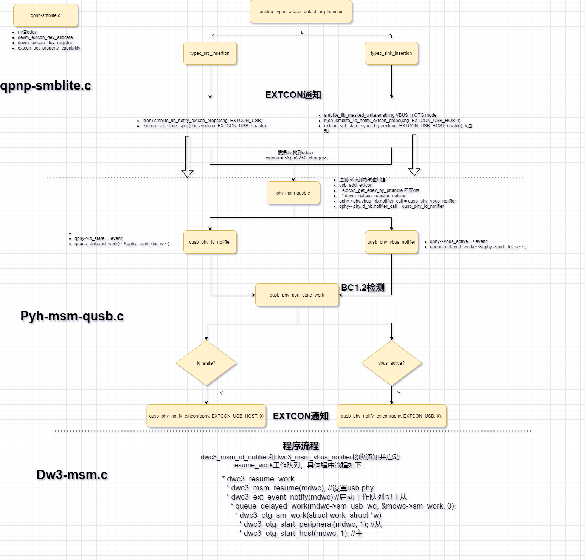
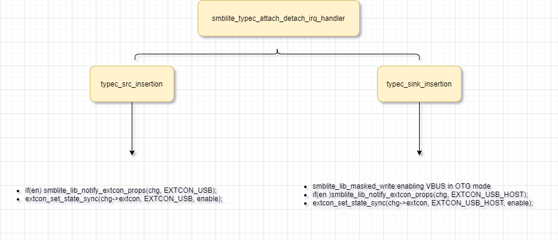
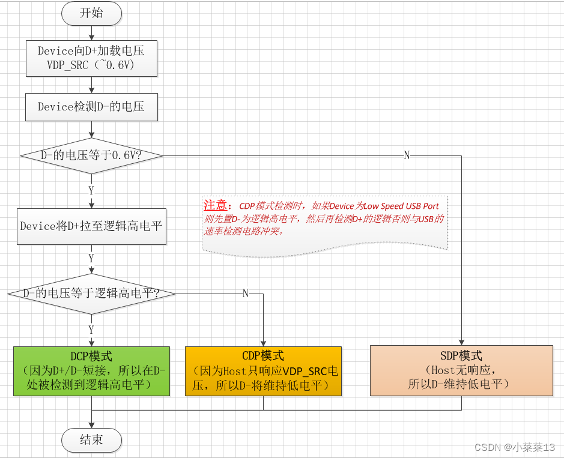

概述
高通qcm2290 bc1.2目前使用纯micro usb方式无法获取，看一下原理
参考
qcom有的平台直接通过寄存器获取，接口smblib_get_apsd_result：
代码
涉及文件如下：
vendor/bengal_defconfig
470:CONFIG_MSM_QUSB_PHY=y
CONFIG_USB_MSM_SSPHY_QMP=y
drivers/usb/phy/Makefile：
obj-$(CONFIG_MSM_QUSB_PHY) += phy-msm-qusb.o phy-msm-qusb-v2.o
obj-$(CONFIG_USB_MSM_SSPHY_QMP) += phy-msm-ssusb-qmp.o
程序流程

charger extcon通知原理
qusb设置host/device逻辑
qusb驱动通过extcon绑定pm2250_charger驱动，两者可以进行extcon notify通信，dts:
scuba-usb.dtsi:
/* Primary USB port related High Speed PHY */
qusb_phy0: qusb@1613000 {
compatible = "qcom,qusb2phy";
};
scuba-iot-idp.dtsi:
&qusb_phy0 {
extcon = <&pm2250_charger>;
vdda33-supply = <&vreg_usb_3p1>;
};
pm4125初始化extcon
首先是pmic收到usb插入中断，流程图如下：

drivers/power/supply/qcom/qpnp-smblite.ccharger先分配edev，初始化extcon和内核通知链:
static const unsigned int smblite_lib_extcon_cable[] = {
EXTCON_USB,
EXTCON_USB_HOST,
EXTCON_NONE,
};
static int smblite_probe(struct platform_device *pdev)
{
/* extcon registration */
chg->extcon = devm_extcon_dev_allocate(chg->dev,
smblite_lib_extcon_cable);
if (IS_ERR(chg->extcon)) {
rc = PTR_ERR(chg->extcon);
dev_err(chg->dev, "Couldn't to allocate extcon device rc=%d\n",
rc);
goto cleanup;
}
rc = devm_extcon_dev_register(chg->dev, chg->extcon);
if (rc < 0) {
dev_err(chg->dev, "Couldn't to register extcon device rc=%d\n",
rc);
goto cleanup;
}
/* Support reporting polarity and speed via properties */
/*EXTCON_USB/EXTCON_USB_HOST 支持设置typec的方向还有usb的速度 */
rc = extcon_set_property_capability(chg->extcon,
EXTCON_USB, EXTCON_PROP_USB_TYPEC_POLARITY);
rc |= extcon_set_property_capability(chg->extcon,
EXTCON_USB, EXTCON_PROP_USB_SS);
rc |= extcon_set_property_capability(chg->extcon,
EXTCON_USB_HOST, EXTCON_PROP_USB_TYPEC_POLARITY);
rc |= extcon_set_property_capability(chg->extcon,
EXTCON_USB_HOST, EXTCON_PROP_USB_SS);
if (rc < 0) {
dev_err(chg->dev,
"Couldn't to configure extcon capabilities\n");
goto cleanup;
}
}
int devm_extcon_dev_register(struct device *dev, struct extcon_dev *edev)
{
...
info->edev = devm_extcon_dev_allocate(dev, usb_extcon_cable);//注册对应的edev
ret = extcon_dev_register(edev);
...
}
int extcon_dev_register(struct extcon_dev *edev)
{
...
edev->nh = devm_kcalloc(&edev->dev, edev->max_supported,sizeof(*edev->nh), GFP_KERNEL);
-
for (index = 0; index < edev->max_supported; index++)
RAW_INIT_NOTIFIER_HEAD(&edev->nh[index]);
RAW_INIT_NOTIFIER_HEAD(&edev->nh_all);
...
}
qusb 根据dts找到edev(pm2250_charger)，并注册到其内核通知链中(usb_add_phy_dev)
这里做了两件事：
qusb 根据dts找到edev(pm2250_charger)，并将vbus_nb和id_nb注册到其内核通知链中(usb_add_phy_dev)
向DW3驱动分配edev，初始化extcon内核通知链。
drivers/usb/phy/phy-msm-qusb.c:
static int qusb_phy_probe(struct platform_device *pdev)
{
if (of_property_read_bool(dev->of_node, "extcon")) {
INIT_DELAYED_WORK(&qphy->port_det_w, qusb_phy_port_state_work);
ret = qusb_phy_extcon_register(qphy);
if (ret)
return ret;
}
ret = usb_add_phy_dev(&qphy->phy);
if (ret)
return ret;
}
1.qusb 根据dts找到edev(pm2250_charger)，并将vbus_nb和id_nb注册到其内核通知链中(usb_add_phy_dev)
int usb_add_phy_dev(struct usb_phy *x)
{
...
ret = usb_add_extcon(x);
...
}
static int usb_add_extcon(struct usb_phy *x)
{
...
if (of_property_read_bool(x->dev->of_node, "extcon")) {
x->edev = extcon_get_edev_by_phandle(x->dev, 0);//找对对应的edev
if (x->vbus_nb.notifier_call) {
ret = devm_extcon_register_notifier(x->dev, x->edev,EXTCON_USB,&x->vbus_nb);
}
}
...
1.注册vbus_nb，绑定EXTCON_USB
if (x->vbus_nb.notifier_call) {
ret = devm_extcon_register_notifier(x->dev, x->edev,
EXTCON_USB,
&x->vbus_nb);
if (ret < 0) {
dev_err(x->dev,
"register VBUS notifier failed\n");
return ret;
}
2.注册id_nb，绑定EXTCON_USB_HOST
if (x->id_nb.notifier_call) {
struct extcon_dev *id_ext;
if (x->id_edev)
id_ext = x->id_edev;
else
id_ext = x->edev;
ret = devm_extcon_register_notifier(x->dev, id_ext,
EXTCON_USB_HOST,
&x->id_nb);
if (ret < 0) {
dev_err(x->dev,
"register ID notifier failed\n");
return ret;
}
}
int devm_extcon_register_notifier(struct device *dev, struct extcon_dev *edev,unsigned int id, struct notifier_block *nb)
{
...
ret = extcon_register_notifier(edev, id, nb);
...
}
int extcon_register_notifier(struct extcon_dev *edev, unsigned int id,struct notifier_block *nb)
{
...
idx = find_cable_index_by_id(edev, id);
ret = raw_notifier_chain_register(&edev->nh[idx], nb);
...
}
注册两个notify，分别是vbus和id脚，由charger发起通知，qusb接收：
static int qusb_phy_extcon_register(struct qusb_phy *qphy)
{
int ret;
/* Register extcon for notifications from charger driver */
qphy->phy.vbus_nb.notifier_call = qusb_phy_vbus_notifier;
qphy->phy.id_nb.notifier_call = qusb_phy_id_notifier;
/* Register extcon to notify USB driver */
qphy->usb_extcon = devm_extcon_dev_allocate(qphy->phy.dev,
qusb_phy_extcon_cable);
if (IS_ERR(qphy->usb_extcon)) {
dev_err(qphy->phy.dev, "failed to allocate extcon device\n");
return PTR_ERR(qphy->usb_extcon);
}
向DW3驱动注册extcon设备，并设置属性EXTCON_USB_HOST EXTCON_USB
ret = devm_extcon_dev_register(qphy->phy.dev, qphy->usb_extcon);
if (ret) {
dev_err(qphy->phy.dev, "failed to register extcon device\n");
return ret;
}
extcon_set_property_capability(qphy->usb_extcon, EXTCON_USB,
EXTCON_PROP_USB_TYPEC_POLARITY);
extcon_set_property_capability(qphy->usb_extcon, EXTCON_USB,
EXTCON_PROP_USB_SS);
extcon_set_property_capability(qphy->usb_extcon, EXTCON_USB_HOST,
EXTCON_PROP_USB_TYPEC_POLARITY);
extcon_set_property_capability(qphy->usb_extcon, EXTCON_USB_HOST,
EXTCON_PROP_USB_SS);
return 0;
}
dw3驱动dts如下：
&usb0 {
extcon = <&qusb_phy0>, <&eud>;
};
&soc {
/* Primary USB port related controller */
usb0: ssusb@4e00000 {
compatible = "qcom,dwc-usb3-msm";
reg = <0x4e00000 0x100000>;
reg-names = "core_base";
};
dwc3@4e00000 {
compatible = "snps,dwc3";
reg = <0x4e00000 0xcd00>;
interrupt-parent = <&intc>;
interrupts = <GIC_SPI 255 IRQ_TYPE_LEVEL_HIGH>;
usb-phy = <&qusb_phy0>, <&usb_qmp_phy>;
tx-fifo-resize;
linux,sysdev_is_parent;
snps,disable-clk-gating;
snps,dis_u2_susphy_quirk;
snps,dis_enblslpm_quirk;
snps,has-lpm-erratum;
snps,hird-threshold = /bits/ 8 <0x10>;
snps,usb3-u1u2-disable;
snps,usb3_lpm_capable;
usb-core-id = <0>;
maximum-speed = "super-speed";
dr_mode = "otg";
};
};
两个notify如下:
也就是charger那边发送
extcon_set_state_sync(chg->extcon, EXTCON_USB, enable)后会发通知给qusb的qusb_phy_vbus_notifier，然后queue_delayed_work port_det_w工作队列。charger那边发送
extcon_set_state_sync(chg->extcon, EXTCON_USB_HOST, enable)后会发通知给qusb的qusb_phy_id_notifier，然后queue_delayed_work port_det_w工作队列。
static int qusb_phy_vbus_notifier(struct notifier_block *nb,
unsigned long event, void *data)
{
struct usb_phy *phy = container_of(nb, struct usb_phy, vbus_nb);
struct qusb_phy *qphy = container_of(phy, struct qusb_phy, phy);
if (!qphy || !data) {
pr_err("Failed to get PHY for vbus_notifier\n");
return NOTIFY_DONE;
}
dump_stack();
qphy->vbus_active = !!event;
dev_err(qphy->phy.dev, "Got VBUS notification: %u\n", event);
queue_delayed_work(system_freezable_wq, &qphy->port_det_w, 0);
return NOTIFY_DONE;
}
static int qusb_phy_id_notifier(struct notifier_block *nb,
unsigned long event, void *data)
{
struct usb_phy *phy = container_of(nb, struct usb_phy, id_nb);
struct qusb_phy *qphy = container_of(phy, struct qusb_phy, phy);
if (!qphy || !data) {
pr_err("Failed to get PHY for vbus_notifier\n");
return NOTIFY_DONE;
}
dump_stack();
qphy->id_state = !event;
dev_err(qphy->phy.dev, "Got id notification: %u\n", event);
queue_delayed_work(system_freezable_wq, &qphy->port_det_w, 0);
return NOTIFY_DONE;
}
charger BC1.2检测原理
检测原理：
(1)DCD：DP上有150mV（= 10uA x 15K欧姆下拉电阻）的电压，DM上电压为0 DCD机制向D+提供的电流源，可用定时器替代，但DCD能尽快检测数据线的连接，不必等待定时器超时， DCD（data contact detect）的检测机制等待时间是可编程的通常是300ms 或者 600 ms。 (2)Primary Det（DP发起检测DM）： DP上加载0.6V电压，DM上电压为0，充电器类型是SDP DP上加载0.6V电压，DM上电压为0.6V，进入Secondary Det (3)Secondary Det（DM发起检测DP）： DM上加载0.8V电压，DP上电压为0，充电器类型是CDP DM上加载0.8V电压，DP上电压为0.8V，充电器类型是DCP

qusb port_det_w.work识别流程
总体usb bc12识别流程由上层charger通知device插入后，将调用vbus通知链，以下是SDP识别过程及log：
* INIT_DELAYED_WORK(&qphy->port_det_w, qusb_phy_port_state_work);
* switch (qphy->port_state)
* PORT_UNKNOWN
* PORT_DISCONNECTED
* PORT_DCD_IN_PROGRESS
* PORT_DISCONNECTED
* PORT_DCD_IN_PROGRESS
* PORT_PRIMARY_IN_PROGRESS
* PORT_DCD_IN_PROGRESS
* qusb_phy_notify_charger(qphy, POWER_SUPPLY_TYPE_USB); //设置charger充电类型
* power_supply_set_property(qphy->usb_psy, POWER_SUPPLY_PROP_REAL_TYPE,&pval);
* qusb_phy_notify_extcon(qphy, EXTCON_USB, 1); //通知dw3驱动切换device
* extcon_set_state_sync(qphy->usb_extcon, extcon_id, event);
log如下，识别过程花费时间0.302503s：
[ 74.957732] msm-qusb-phy 1613000.qusb: Got VBUS notification: 1
[ 74.963686] extcon extcon2: name_show = NAME=soc:rt_pd_manager
[ 74.969536] extcon extcon2: state_show = STATE=USB=1
[ 74.969536] USB-HOST=0
[ 74.979288] msm-qusb-phy 1613000.qusb: state: 0
[ 74.983873] msm-qusb-phy 1613000.qusb: qusb_phy_enable_power turn on regulators
[ 74.991506] msm-qusb-phy 1613000.qusb: min_vol:925000 max_vol:970000
[ 74.999738] msm-qusb-phy 1613000.qusb: qusb_phy_enable_clocks(): on:1
[ 75.006219] msm-qusb-phy 1613000.qusb: state: 1
[ 75.043606] ///PD dbg info 42d
[ 75.043779] PAX_CHG_MP2721: mp2721_info tcpc_notifier_call, old_state = (null), new_state = (null)
[ 75.046699] < 75.043>Trigger PD_TIMER_SINK_WAIT_CAP
[ 75.060061] msm-qusb-phy 1613000.qusb: state: 2
[ 75.062241] PAX_CHG_MP2721: mp2721_info tcpc_notifier_call, old_state = UNATTACHED, new_state = UNATTACHED
[ 75.065356] msm-qusb-phy 1613000.qusb: state: 1 reg: 0x0
[ 75.065359] msm-qusb-phy 1613000.qusb: state: 2
[ 75.085011] rt-pd-manager soc:rt_pd_manager: pd_tcp_notifier_call pd state = 9
[ 75.088173] E:pd_state=9
[ 75.138681] PAX_CHG_MP2721: tcpc_notifier_call sink vbus 5000mV 100mA type(0x02)
[ 75.164064] msm-qusb-phy 1613000.qusb: state: 3
[ 75.175473] rt-pd-manager soc:rt_pd_manager: pd_tcp_notifier_call sink vbus 5000mV 100mA type(0x02)
[ 75.221475] msm-qusb-phy 1613000.qusb: state: 2 reg: 0x0
[ 75.226998] msm-qusb-phy 1613000.qusb: qusb_phy_enable_clocks(): on:0
[ 75.233477] msm-qusb-phy 1613000.qusb: qusb_phy_enable_power turn off regulators
[ 75.241424] msm-qusb-phy 1613000.qusb: min_vol:0 max_vol:970000
[ 75.247378] msm-qusb-phy 1613000.qusb: QUSB PHY's regulators are turned OFF.
[ 75.254457] msm-qusb-phy 1613000.qusb: Notify charger type: 4
[ 75.260235] mp2721 0-003f: mp2721_set_property() set charge_type:4, ret:0
DCP识别过程log如下：
行 1585: [Wed Dec 31 20:05:14 1969] msm-qusb-phy 1613000.qusb: Got VBUS notification: 1
行 1594: [Wed Dec 31 20:05:14 1969] msm-qusb-phy 1613000.qusb: state: 0
行 1595: [Wed Dec 31 20:05:15 1969] msm-qusb-phy 1613000.qusb: qusb_phy_enable_power turn on regulators
行 1600: [Wed Dec 31 20:05:15 1969] msm-qusb-phy 1613000.qusb: min_vol:925000 max_vol:970000
行 1618: [Wed Dec 31 20:05:15 1969] msm-qusb-phy 1613000.qusb: qusb_phy_enable_clocks(): on:1
行 1619: [Wed Dec 31 20:05:15 1969] msm-qusb-phy 1613000.qusb: state: 1
行 1630: [Wed Dec 31 20:05:15 1969] msm-qusb-phy 1613000.qusb: state: 2
行 1635: [Wed Dec 31 20:05:15 1969] msm-qusb-phy 1613000.qusb: state: 1 reg: 0x0
行 1639: [Wed Dec 31 20:05:15 1969] msm-qusb-phy 1613000.qusb: state: 2
行 1649: [Wed Dec 31 20:05:15 1969] msm-qusb-phy 1613000.qusb: state: 3
行 1650: [Wed Dec 31 20:05:15 1969] msm-qusb-phy 1613000.qusb: state: 2 reg: 0x10101010
行 1654: [Wed Dec 31 20:05:15 1969] msm-qusb-phy 1613000.qusb: state: 3
行 1661: [Wed Dec 31 20:05:15 1969] msm-qusb-phy 1613000.qusb: state: 4
行 1662: [Wed Dec 31 20:05:15 1969] msm-qusb-phy 1613000.qusb: state: 3 reg: 0x10101010
行 1666: [Wed Dec 31 20:05:15 1969] msm-qusb-phy 1613000.qusb: Notify charger type: 5
处理函数如下工作队列：
static void qusb_phy_port_state_work(struct work_struct *w)
{
struct qusb_phy *qphy = container_of(w, struct qusb_phy,
port_det_w.work);
unsigned long delay = 0;
int status, ret;
bool vbus_active, id_state;
dev_err(qphy->phy.dev, "state: %d\n", qphy->port_state);
/*
* The events for cable connect should be ignored if
* the is_port_valid set to false to prevent the USB
* stack being brought up and voting for the regulators.
*/
qphy->is_port_valid = qphy_get_notifier_gpio_state(qphy);
if (!qphy->is_port_valid) {
dev_err(qphy->phy.dev, "Port not valid, notify disconnect\n");
vbus_active = false;
id_state = true;
} else {
vbus_active = qphy->vbus_active;
id_state = qphy->id_state;
}
switch (qphy->port_state) {
case PORT_UNKNOWN:
if (!id_state) {
qphy->port_state = PORT_HOST_MODE;
qusb_phy_notify_extcon(qphy, EXTCON_USB_HOST, 1);
return;
}
if (vbus_active) {
if (qphy->eud_enable_reg &&
readl_relaxed(qphy->eud_enable_reg)) {
pr_err("qusb: EUD is enabled, no charger detection\n");
qusb_phy_notify_charger(qphy,
POWER_SUPPLY_TYPE_USB);
qusb_phy_notify_extcon(qphy, EXTCON_USB, 1);
qphy->port_state = PORT_CHG_DET_DONE;
return;
}
/* Enable DCD sequence */
ret = qusb_phy_prepare_chg_det(qphy);
if (ret)
return;
qusb_phy_chg_det_enable_seq(qphy, STATE_DCD);
qphy->port_state = PORT_DCD_IN_PROGRESS;
qphy->dcd_timeout = 0;
delay = CHG_DCD_POLL_TIME_MSEC;
break;
}
return;
case PORT_DISCONNECTED:
qusb_phy_unprepare_chg_det(qphy);
qphy->port_state = PORT_UNKNOWN;
break;
case PORT_DCD_IN_PROGRESS:
if (!vbus_active) {
/* Disable PHY sequence */
qphy->port_state = PORT_DISCONNECTED;
break;
}
status = qusb_phy_chg_det_status(qphy, STATE_DCD);
if (!status && qphy->dcd_timeout < CHG_DCD_TIMEOUT_MSEC) {
delay = CHG_DCD_POLL_TIME_MSEC;
qphy->dcd_timeout += delay;
} else if (status) {
qusb_phy_chg_det_enable_seq(qphy, STATE_PRIMARY);
qphy->port_state = PORT_PRIMARY_IN_PROGRESS;
delay = CHG_PRIMARY_DET_TIME_MSEC;
} else if (qphy->dcd_timeout >= CHG_DCD_TIMEOUT_MSEC) {
qusb_phy_notify_charger(qphy,
POWER_SUPPLY_TYPE_USB_DCP);
qusb_phy_unprepare_chg_det(qphy);
qphy->port_state = PORT_CHG_DET_DONE;
}
break;
case PORT_PRIMARY_IN_PROGRESS:
if (!vbus_active) {
qphy->port_state = PORT_DISCONNECTED;
break;
}
status = qusb_phy_chg_det_status(qphy, STATE_PRIMARY);
if (status) {
qusb_phy_chg_det_enable_seq(qphy, STATE_SECONDARY);
qphy->port_state = PORT_SECONDARY_IN_PROGRESS;
delay = CHG_SECONDARY_DET_TIME_MSEC;
} else {
qusb_phy_unprepare_chg_det(qphy);
qusb_phy_notify_charger(qphy, POWER_SUPPLY_TYPE_USB);
qusb_phy_notify_extcon(qphy, EXTCON_USB, 1);
qphy->port_state = PORT_CHG_DET_DONE;
}
break;
case PORT_SECONDARY_IN_PROGRESS:
if (!vbus_active) {
qphy->port_state = PORT_DISCONNECTED;
break;
}
status = qusb_phy_chg_det_status(qphy, STATE_SECONDARY);
if (status) {
qusb_phy_notify_charger(qphy,
POWER_SUPPLY_TYPE_USB_DCP);
} else {
qusb_phy_notify_charger(qphy,
POWER_SUPPLY_TYPE_USB_CDP);
qusb_phy_notify_extcon(qphy, EXTCON_USB, 1);
}
qusb_phy_unprepare_chg_det(qphy);
qphy->port_state = PORT_CHG_DET_DONE;
/*
* Fall through to check if cable got disconnected
* during detection.
*/
case PORT_CHG_DET_DONE:
if (!vbus_active) {
qphy->port_state = PORT_UNKNOWN;
qusb_phy_notify_extcon(qphy, EXTCON_USB, 0);
}
return;
case PORT_HOST_MODE:
if (id_state) {
qphy->port_state = PORT_UNKNOWN;
qusb_phy_notify_extcon(qphy, EXTCON_USB_HOST, 0);
}
if (!qphy->vbus_active)
return;
break;
default:
return;
}
queue_delayed_work(system_freezable_wq,
&qphy->port_det_w, msecs_to_jiffies(delay));
}
smblite usb设置充电类型接口
drivers/power/supply/qcom/qpnp-smblite.c:
static int smblite_usb_set_prop(struct power_supply *psy,
enum power_supply_property psp,
const union power_supply_propval *val)
{
switch (psp) {
case POWER_SUPPLY_PROP_REAL_TYPE:
rc = smblite_lib_set_prop_usb_type(chg, val);
break;
default:
pr_err("set prop %d is not supported\n", psp);
rc = -EINVAL;
break;
}
return rc;
}
static struct power_supply_desc usb_psy_desc = {
.name = "usb",
.type = POWER_SUPPLY_TYPE_USB,
.properties = smblite_usb_props,
.num_properties = ARRAY_SIZE(smblite_usb_props),
.get_property = smblite_usb_get_prop,
.set_property = smblite_usb_set_prop,
.property_is_writeable = smblite_usb_prop_is_writeable,
};
static int smblite_init_usb_psy(struct smblite *chip)
{
struct power_supply_config usb_cfg = {};
struct smb_charger *chg = &chip->chg;
usb_cfg.drv_data = chip;
usb_cfg.of_node = chg->dev->of_node;
chg->usb_psy = devm_power_supply_register(chg->dev,
&usb_psy_desc,
&usb_cfg);
if (IS_ERR(chg->usb_psy)) {
pr_err("Couldn't register USB power supply\n");
return PTR_ERR(chg->usb_psy);
}
pr_err("wugn test register USB power supply OK\n");
return 0;
}
static int smblite_probe(struct platform_device *pdev)
{
rc = smblite_init_usb_psy(chip);
if (rc < 0) {
pr_err("Couldn't initialize usb psy rc=%d\n", rc);
goto cleanup;
}
}
DW3驱动设置USB主从模式
dw3驱动额注册了extcon notify，有2个notify接收主从切换信息，分别是dwc3_msm_id_notifier和dwc3_msm_vbus_notifier，主要是BC12检测完后，用来接收qusb phy的USB切换信息，当dw3接收到消息后都会启用工作队列resume_work,代码流程如下：
static int dwc3_msm_probe(struct platform_device *pdev)
{
INIT_WORK(&mdwc->resume_work, dwc3_resume_work);
if (of_property_read_bool(node, "extcon")) {
ret = dwc3_msm_extcon_register(mdwc);
if (ret)
goto put_dwc3;
}
static int dwc3_msm_extcon_register(struct dwc3_msm *mdwc)
{
extcon_cnt = of_count_phandle_with_args(node, "extcon", NULL);
mdwc->extcon = devm_kcalloc(mdwc->dev, extcon_cnt,
sizeof(*mdwc->extcon), GFP_KERNEL);
if (!mdwc->extcon)
return -ENOMEM;
for (idx = 0; idx < extcon_cnt; idx++) {
edev = extcon_get_edev_by_phandle(mdwc->dev, idx);
if (IS_ERR(edev) && PTR_ERR(edev) != -ENODEV)
return PTR_ERR(edev);
if (IS_ERR_OR_NULL(edev))
continue;
check_vbus_state = check_id_state = true;
phandle_found = true;
mdwc->extcon[idx].mdwc = mdwc;
mdwc->extcon[idx].edev = edev;
mdwc->extcon[idx].idx = idx;
mdwc->extcon[idx].vbus_nb.notifier_call =
dwc3_msm_vbus_notifier;
ret = extcon_register_notifier(edev, EXTCON_USB,
&mdwc->extcon[idx].vbus_nb);
if (ret < 0)
check_vbus_state = false;
mdwc->extcon[idx].id_nb.notifier_call = dwc3_msm_id_notifier;
ret = extcon_register_notifier(edev, EXTCON_USB_HOST,
&mdwc->extcon[idx].id_nb);
if (ret < 0)
check_id_state = false;
mdwc->extcon[idx].blocking_sync_nb.notifier_call =
dwc3_usb_blocking_sync;
extcon_register_blocking_notifier(edev, EXTCON_USB_HOST,
&mdwc->extcon[idx].blocking_sync_nb);
/* Update initial VBUS/ID state */
if (check_vbus_state && extcon_get_state(edev, EXTCON_USB))
dwc3_msm_vbus_notifier(&mdwc->extcon[idx].vbus_nb,
true, edev);
else if (check_id_state &&
extcon_get_state(edev, EXTCON_USB_HOST))
dwc3_msm_id_notifier(&mdwc->extcon[idx].id_nb,
true, edev);
}
}
这里主要绑定了两个notify：
EXTCON_USB_HOST:
static int dwc3_msm_id_notifier(struct notifier_block *nb,
unsigned long event, void *ptr)
{
struct dwc3 *dwc;
struct extcon_dev *edev = ptr;
struct extcon_nb *enb = container_of(nb, struct extcon_nb, id_nb);
struct dwc3_msm *mdwc = enb->mdwc;
enum dwc3_id_state id;
if (!edev || !mdwc)
return NOTIFY_DONE;
dwc = platform_get_drvdata(mdwc->dwc3);
dbg_event(0xFF, "extcon idx", enb->idx);
id = event ? DWC3_ID_GROUND : DWC3_ID_FLOAT;
if (mdwc->id_state == id)
return NOTIFY_DONE;
mdwc->ext_idx = enb->idx;
dev_err(mdwc->dev, "host:%ld (id:%d) event received\n", event, id);
mdwc->id_state = id;
dbg_event(0xFF, "id_state", mdwc->id_state);
queue_work(mdwc->dwc3_wq, &mdwc->resume_work);
return NOTIFY_DONE;
}
EXTCON_USB:
static int dwc3_msm_vbus_notifier(struct notifier_block *nb,
unsigned long event, void *ptr)
{
struct dwc3 *dwc;
struct extcon_dev *edev = ptr;
struct extcon_nb *enb = container_of(nb, struct extcon_nb, vbus_nb);
struct dwc3_msm *mdwc = enb->mdwc;
char *eud_str;
const char *edev_name;
if (!edev || !mdwc)
return NOTIFY_DONE;
dwc = platform_get_drvdata(mdwc->dwc3);
dbg_event(0xFF, "extcon idx", enb->idx);
dev_err(mdwc->dev, "vbus:%ld event received\n", event);
edev_name = extcon_get_edev_name(edev);
dev_err(mdwc->dev,"edev:%s\n", edev_name);
/* detect USB spoof disconnect/connect notification with EUD device */
eud_str = strnstr(edev_name, "eud", strlen(edev_name));
if (eud_str) {
if (mdwc->eud_active == event)
return NOTIFY_DONE;
mdwc->eud_active = event;
mdwc->check_eud_state = true;
} else {
if (mdwc->vbus_active == event)
return NOTIFY_DONE;
mdwc->vbus_active = event;
}
/*
* Drive a pulse on DP to ensure proper CDP detection
* and only when the vbus connect event is a valid one.
*/
if (get_psy_type(mdwc) == POWER_SUPPLY_TYPE_USB_CDP &&
mdwc->vbus_active && !mdwc->check_eud_state) {
dev_err(mdwc->dev, "Connected to CDP, pull DP up\n");
usb_phy_drive_dp_pulse(mdwc->hs_phy, DP_PULSE_WIDTH_MSEC);
}
if (dwc3_is_otg_or_drd(dwc) && !mdwc->in_restart)
queue_work(mdwc->dwc3_wq, &mdwc->resume_work);
return NOTIFY_DONE;
}
resume_work主从切换原理
USB主从切换主要是通过resume_work工作队列来完成，
* dwc3_resume_work
* dwc3_msm_resume(mdwc); //设置usb phy
* dwc3_ext_event_notify(mdwc);//启动工作队列切主从
* queue_delayed_work(mdwc->sm_usb_wq, &mdwc->sm_work, 0);
* dwc3_otg_sm_work(struct work_struct *w)
* dwc3_otg_start_peripheral(mdwc, 1); //从
* dwc3_otg_start_host(mdwc, 1); //主
static void dwc3_resume_work(struct work_struct *w)
{
struct dwc3_msm *mdwc = container_of(w, struct dwc3_msm, resume_work);
struct dwc3 *dwc = platform_get_drvdata(mdwc->dwc3);
union extcon_property_value val;
unsigned int extcon_id;
struct extcon_dev *edev = NULL;
const char *edev_name;
char *eud_str;
int ret = 0;
dev_dbg(mdwc->dev, "%s: dwc3 resume work\n", __func__);
if (mdwc->extcon && mdwc->vbus_active && !mdwc->in_restart) {
extcon_id = EXTCON_USB; //从
edev = mdwc->extcon[mdwc->ext_idx].edev;
} else if (mdwc->extcon && mdwc->id_state == DWC3_ID_GROUND) {
extcon_id = EXTCON_USB_HOST; //主
edev = mdwc->extcon[mdwc->ext_idx].edev;
}
if (edev) {
edev_name = extcon_get_edev_name(edev);
dbg_log_string("edev:%s\n", edev_name);
/* Skip querying speed and cc_state for EUD edev */
eud_str = strnstr(edev_name, "eud", strlen(edev_name));
if (eud_str)
goto skip_update;
}
dwc->maximum_speed = dwc->max_hw_supp_speed;
/* Check speed and Type-C polarity values in order to configure PHY */
if (edev && extcon_get_state(edev, extcon_id)) {
ret = extcon_get_property(edev, extcon_id,
EXTCON_PROP_USB_SS, &val);
if (!ret && val.intval == 0)
dwc->maximum_speed = USB_SPEED_HIGH;
ret = extcon_get_property(edev, extcon_id,
EXTCON_PROP_USB_TYPEC_POLARITY, &val);
if (ret)
mdwc->typec_orientation = ORIENTATION_NONE;
else
mdwc->typec_orientation = val.intval ?
ORIENTATION_CC2 : ORIENTATION_CC1;
dbg_event(0xFF, "cc_state", mdwc->typec_orientation);
ret = extcon_get_property(edev, extcon_id,
EXTCON_PROP_USB_TYPEC_MED_HIGH_CURRENT, &val);
if (!ret)
dwc->gadget.is_selfpowered = val.intval;
else
dwc->gadget.is_selfpowered = 0;
}
skip_update:
dbg_log_string("max_speed:%d hw_supp_speed:%d override_speed:%d",
dwc->maximum_speed, dwc->max_hw_supp_speed,
mdwc->override_usb_speed);
if (mdwc->override_usb_speed &&
mdwc->override_usb_speed <= dwc->maximum_speed) {
dwc->maximum_speed = mdwc->override_usb_speed;
dwc->gadget.max_speed = dwc->maximum_speed;
}
dbg_event(0xFF, "speed", dwc->maximum_speed);
/*
* Skip scheduling sm work if no work is pending. When boot-up
* with USB cable connected, usb state m/c is skipped to avoid
* any changes to dp/dm lines. As PM supsend and resume can
* happen while charger is connected, scheduling sm work during
* pm resume will reset the controller and phy which might impact
* dp/dm lines (and charging voltage).
*/
if (mdwc->drd_state == DRD_STATE_UNDEFINED &&
!edev && !mdwc->resume_pending)
return;
/*
* exit LPM first to meet resume timeline from device side.
* resume_pending flag would prevent calling
* dwc3_msm_resume() in case we are here due to system
* wide resume without usb cable connected. This flag is set
* only in case of power event irq in lpm.
*/
if (mdwc->resume_pending) {
dwc3_msm_resume(mdwc);
mdwc->resume_pending = false;
}
if (atomic_read(&mdwc->pm_suspended)) {
dbg_event(0xFF, "RWrk PMSus", 0);
/* let pm resume kick in resume work later */
return;
}
dwc3_ext_event_notify(mdwc);
}
设置usb phy：
static int dwc3_msm_resume(struct dwc3_msm *mdwc)
{
int ret;
long core_clk_rate;
struct dwc3 *dwc = platform_get_drvdata(mdwc->dwc3);
struct usb_irq *uirq;
dev_dbg(mdwc->dev, "%s: exiting lpm\n", __func__);
/*
* If h/w exited LPM without any events, ensure
* h/w is reset before processing any new events.
*/
if (!mdwc->vbus_active && mdwc->id_state)
set_bit(WAIT_FOR_LPM, &mdwc->inputs);
mutex_lock(&mdwc->suspend_resume_mutex);
if (!atomic_read(&dwc->in_lpm)) {
dev_dbg(mdwc->dev, "%s: Already resumed\n", __func__);
mutex_unlock(&mdwc->suspend_resume_mutex);
return 0;
}
pm_stay_awake(mdwc->dev);
if (mdwc->in_host_mode && mdwc->max_rh_port_speed == USB_SPEED_HIGH)
dwc3_msm_update_bus_bw(mdwc, BUS_VOTE_SVS);
else
dwc3_msm_update_bus_bw(mdwc, mdwc->default_bus_vote);
/* Vote for TCXO while waking up USB HSPHY */
ret = clk_prepare_enable(mdwc->xo_clk);
if (ret)
dev_err(mdwc->dev, "%s failed to vote TCXO buffer%d\n",
__func__, ret);
/* Restore controller power collapse */
if (mdwc->lpm_flags & MDWC3_POWER_COLLAPSE) {
dev_dbg(mdwc->dev, "%s: exit power collapse\n", __func__);
dwc3_msm_config_gdsc(mdwc, 1);
ret = reset_control_assert(mdwc->core_reset);
if (ret)
dev_err(mdwc->dev, "%s:core_reset assert failed\n",
__func__);
/* HW requires a short delay for reset to take place properly */
usleep_range(1000, 1200);
ret = reset_control_deassert(mdwc->core_reset);
if (ret)
dev_err(mdwc->dev, "%s:core_reset deassert failed\n",
__func__);
clk_prepare_enable(mdwc->sleep_clk);
} else if (dwc->gdsc_collapse_in_host_suspend && mdwc->in_host_mode) {
dev_dbg(mdwc->dev, "Turn on GDSC in host mode bus resume\n");
dwc3_msm_config_gdsc(mdwc, 1);
}
/*
* Enable clocks
* Turned ON iface_clk before core_clk due to FSM depedency.
*/
clk_prepare_enable(mdwc->iface_clk);
if (mdwc->noc_aggr_clk)
clk_prepare_enable(mdwc->noc_aggr_clk);
core_clk_rate = mdwc->core_clk_rate;
if (mdwc->in_host_mode && mdwc->max_rh_port_speed == USB_SPEED_HIGH) {
core_clk_rate = mdwc->core_clk_rate_hs;
dev_dbg(mdwc->dev, "%s: set hs core clk rate %ld\n", __func__,
core_clk_rate);
}
clk_set_rate(mdwc->core_clk, core_clk_rate);
clk_prepare_enable(mdwc->core_clk);
/* set Memory core: ON, Memory periphery: ON */
clk_set_flags(mdwc->core_clk, CLKFLAG_RETAIN_MEM);
clk_set_flags(mdwc->core_clk, CLKFLAG_RETAIN_PERIPH);
clk_prepare_enable(mdwc->utmi_clk);
if (mdwc->bus_aggr_clk)
clk_prepare_enable(mdwc->bus_aggr_clk);
/*
* Disable any wakeup events that were enabled if pwr_event_irq
* is used as wakeup interrupt.
*/
if (mdwc->lpm_flags & MDWC3_USE_PWR_EVENT_IRQ_FOR_WAKEUP) {
disable_irq_nosync(mdwc->wakeup_irq[PWR_EVNT_IRQ].irq);
dwc3_msm_set_pwr_events(mdwc, false);
mdwc->lpm_flags &= ~MDWC3_USE_PWR_EVENT_IRQ_FOR_WAKEUP;
}
/* Resume SS PHY */
if (dwc->maximum_speed >= USB_SPEED_SUPER &&
mdwc->lpm_flags & MDWC3_SS_PHY_SUSPEND) {
mdwc->ss_phy->flags &= ~(PHY_LANE_A | PHY_LANE_B);
if (mdwc->orientation_override)
mdwc->ss_phy->flags |= mdwc->orientation_override;
else if (mdwc->typec_orientation == ORIENTATION_CC1)
mdwc->ss_phy->flags |= PHY_LANE_A;
else if (mdwc->typec_orientation == ORIENTATION_CC2)
mdwc->ss_phy->flags |= PHY_LANE_B;
usb_phy_set_suspend(mdwc->ss_phy, 0);
mdwc->ss_phy->flags &= ~DEVICE_IN_SS_MODE;
mdwc->lpm_flags &= ~MDWC3_SS_PHY_SUSPEND;
if (mdwc->in_host_mode) {
u32 reg = dwc3_readl(dwc->regs, DWC3_GUSB3PIPECTL(0));
reg &= ~DWC3_GUSB3PIPECTL_DISRXDETU3;
dwc3_writel(dwc->regs, DWC3_GUSB3PIPECTL(0), reg);
}
}
mdwc->hs_phy->flags &= ~(PHY_HSFS_MODE | PHY_LS_MODE);
/* Resume HS PHY */
usb_phy_set_suspend(mdwc->hs_phy, 0);
/* Recover from controller power collapse */
if (mdwc->lpm_flags & MDWC3_POWER_COLLAPSE) {
dev_dbg(mdwc->dev, "%s: exit power collapse\n", __func__);
dwc3_msm_power_collapse_por(mdwc);
mdwc->lpm_flags &= ~MDWC3_POWER_COLLAPSE;
}
atomic_set(&dwc->in_lpm, 0);
/* enable power evt irq for IN P3 detection */
enable_irq(mdwc->wakeup_irq[PWR_EVNT_IRQ].irq);
/* Disable HSPHY auto suspend */
dwc3_msm_write_reg(mdwc->base, DWC3_GUSB2PHYCFG(0),
dwc3_msm_read_reg(mdwc->base, DWC3_GUSB2PHYCFG(0)) &
~DWC3_GUSB2PHYCFG_SUSPHY);
/* Disable wakeup capable for HS_PHY IRQ & SS_PHY_IRQ if enabled */
if (mdwc->lpm_flags & MDWC3_ASYNC_IRQ_WAKE_CAPABILITY) {
if (mdwc->use_pdc_interrupts ||
!mdwc->wakeup_irq[HS_PHY_IRQ].irq) {
configure_usb_wakeup_interrupts(mdwc, false);
} else {
uirq = &mdwc->wakeup_irq[HS_PHY_IRQ];
configure_nonpdc_usb_interrupt(mdwc, uirq, false);
uirq = &mdwc->wakeup_irq[SS_PHY_IRQ];
configure_nonpdc_usb_interrupt(mdwc, uirq, false);
}
mdwc->lpm_flags &= ~MDWC3_ASYNC_IRQ_WAKE_CAPABILITY;
}
dev_info(mdwc->dev, "DWC3 exited from low power mode\n");
/* Enable core irq */
if (dwc->irq)
enable_irq(dwc->irq);
/*
* Handle other power events that could not have been handled during
* Low Power Mode
*/
dwc3_pwr_event_handler(mdwc);
if (pm_qos_request_active(&mdwc->pm_qos_req_dma))
schedule_delayed_work(&mdwc->perf_vote_work,
msecs_to_jiffies(1000 * PM_QOS_SAMPLE_SEC));
dbg_event(0xFF, "Ctl Res", atomic_read(&dwc->in_lpm));
mutex_unlock(&mdwc->suspend_resume_mutex);
return 0;
}
主从切换实际是sm_work做的：
static void dwc3_ext_event_notify(struct dwc3_msm *mdwc)
{
/* Flush processing any pending events before handling new ones */
flush_delayed_work(&mdwc->sm_work);
if (mdwc->id_state == DWC3_ID_FLOAT) {
dev_dbg(mdwc->dev, "XCVR: ID set\n");
set_bit(ID, &mdwc->inputs);
} else {
dev_dbg(mdwc->dev, "XCVR: ID clear\n");
clear_bit(ID, &mdwc->inputs);
}
if (mdwc->vbus_active && !mdwc->in_restart) {
if (mdwc->hs_phy->flags & EUD_SPOOF_DISCONNECT) {
dev_dbg(mdwc->dev, "XCVR:EUD: BSV clear\n");
clear_bit(B_SESS_VLD, &mdwc->inputs);
} else {
dev_dbg(mdwc->dev, "XCVR: BSV set\n");
set_bit(B_SESS_VLD, &mdwc->inputs);
}
} else {
dev_dbg(mdwc->dev, "XCVR: BSV clear\n");
clear_bit(B_SESS_VLD, &mdwc->inputs);
}
if (mdwc->suspend) {
dev_dbg(mdwc->dev, "XCVR: SUSP set\n");
set_bit(B_SUSPEND, &mdwc->inputs);
} else {
dev_dbg(mdwc->dev, "XCVR: SUSP clear\n");
clear_bit(B_SUSPEND, &mdwc->inputs);
}
if (mdwc->check_eud_state) {
mdwc->hs_phy->flags &=
~(EUD_SPOOF_CONNECT | EUD_SPOOF_DISCONNECT);
dev_dbg(mdwc->dev, "eud: state:%d active:%d hs_phy_flags:0x%x\n",
mdwc->check_eud_state, mdwc->eud_active,
mdwc->hs_phy->flags);
if (mdwc->eud_active) {
mdwc->hs_phy->flags |= EUD_SPOOF_CONNECT;
dev_dbg(mdwc->dev, "EUD: XCVR: BSV set\n");
set_bit(B_SESS_VLD, &mdwc->inputs);
} else {
mdwc->hs_phy->flags |= EUD_SPOOF_DISCONNECT;
dev_dbg(mdwc->dev, "EUD: XCVR: BSV clear\n");
clear_bit(B_SESS_VLD, &mdwc->inputs);
}
mdwc->check_eud_state = false;
}
dev_dbg(mdwc->dev, "eud: state:%d active:%d hs_phy_flags:0x%x\n",
mdwc->check_eud_state, mdwc->eud_active, mdwc->hs_phy->flags);
/* handle case of USB cable disconnect after USB spoof disconnect */
if (!mdwc->vbus_active &&
(mdwc->hs_phy->flags & EUD_SPOOF_DISCONNECT)) {
mdwc->hs_phy->flags &= ~EUD_SPOOF_DISCONNECT;
mdwc->hs_phy->flags |= PHY_SUS_OVERRIDE;
usb_phy_set_suspend(mdwc->hs_phy, 1);
mdwc->hs_phy->flags &= ~PHY_SUS_OVERRIDE;
return;
}
queue_delayed_work(mdwc->sm_usb_wq, &mdwc->sm_work, 0);
}
* INIT_DELAYED_WORK(&mdwc->sm_work, dwc3_otg_sm_work);
* queue_delayed_work(mdwc->sm_usb_wq, &mdwc->sm_work, 0);
* dwc3_otg_sm_work
/**
* dwc3_otg_sm_work - workqueue function.
*
* @w: Pointer to the dwc3 otg workqueue
*
* NOTE: After any change in drd_state, we must reschdule the state machine.
*/
static void dwc3_otg_sm_work(struct work_struct *w)
{
struct dwc3_msm *mdwc = container_of(w, struct dwc3_msm, sm_work.work);
struct dwc3 *dwc = NULL;
bool work = 0;
int ret = 0;
unsigned long delay = 0;
const char *state;
if (mdwc->dwc3)
dwc = platform_get_drvdata(mdwc->dwc3);
if (!dwc) {
dev_err(mdwc->dev, "dwc is NULL.\n");
return;
}
state = dwc3_drd_state_string(mdwc->drd_state);
dev_dbg(mdwc->dev, "%s state\n", state);
dbg_event(0xFF, state, 0);
/* Check OTG state */
switch (mdwc->drd_state) {
case DRD_STATE_UNDEFINED:
if (mdwc->dpdm_nb.notifier_call) {
regulator_unregister_notifier(mdwc->dpdm_reg,
&mdwc->dpdm_nb);
mdwc->dpdm_nb.notifier_call = NULL;
}
/* put controller and phy in suspend if no cable connected */
if (test_bit(ID, &mdwc->inputs) &&
!test_bit(B_SESS_VLD, &mdwc->inputs)) {
dbg_event(0xFF, "undef_id_!bsv", 0);
pm_runtime_set_active(mdwc->dev);
pm_runtime_enable(mdwc->dev);
pm_runtime_get_noresume(mdwc->dev);
dwc3_msm_resume(mdwc);
pm_runtime_put_sync(mdwc->dev);
dbg_event(0xFF, "Undef NoUSB",
atomic_read(&mdwc->dev->power.usage_count));
mdwc->drd_state = DRD_STATE_IDLE;
break;
}
dbg_event(0xFF, "Exit UNDEF", 0);
mdwc->drd_state = DRD_STATE_IDLE;
pm_runtime_set_suspended(mdwc->dev);
pm_runtime_enable(mdwc->dev);
/* fall-through */
case DRD_STATE_IDLE:
if (test_bit(WAIT_FOR_LPM, &mdwc->inputs)) {
dev_dbg(mdwc->dev, "still not in lpm, wait.\n");
break;
}
if (!test_bit(ID, &mdwc->inputs)) {
dev_dbg(mdwc->dev, "!id\n");
mdwc->drd_state = DRD_STATE_HOST_IDLE;
work = 1;
} else if (test_bit(B_SESS_VLD, &mdwc->inputs)) {
dev_dbg(mdwc->dev, "b_sess_vld\n");
if (get_psy_type(mdwc) == POWER_SUPPLY_TYPE_USB_FLOAT)
queue_delayed_work(mdwc->dwc3_wq,
&mdwc->sdp_check,
msecs_to_jiffies(SDP_CONNETION_CHECK_TIME));
/*
* Increment pm usage count upon cable connect. Count
* is decremented in DRD_STATE_PERIPHERAL state on
* cable disconnect or in bus suspend.
*/
pm_runtime_get_sync(mdwc->dev);
dbg_event(0xFF, "BIDLE gsync",
atomic_read(&mdwc->dev->power.usage_count));
dwc3_otg_start_peripheral(mdwc, 1);
mdwc->drd_state = DRD_STATE_PERIPHERAL;
work = 1;
} else {
dwc3_msm_gadget_vbus_draw(mdwc, 0);
dev_dbg(mdwc->dev, "Cable disconnected\n");
}
break;
case DRD_STATE_PERIPHERAL:
if (!test_bit(B_SESS_VLD, &mdwc->inputs) ||
!test_bit(ID, &mdwc->inputs)) {
dev_dbg(mdwc->dev, "!id || !bsv\n");
mdwc->drd_state = DRD_STATE_IDLE;
cancel_delayed_work_sync(&mdwc->sdp_check);
dwc3_otg_start_peripheral(mdwc, 0);
/*
* Decrement pm usage count upon cable disconnect
* which was incremented upon cable connect in
* DRD_STATE_IDLE state
*/
pm_runtime_put_sync_suspend(mdwc->dev);
dbg_event(0xFF, "!BSV psync",
atomic_read(&mdwc->dev->power.usage_count));
work = 1;
} else if (test_bit(B_SUSPEND, &mdwc->inputs) &&
test_bit(B_SESS_VLD, &mdwc->inputs)) {
dev_dbg(mdwc->dev, "BPER bsv && susp\n");
mdwc->drd_state = DRD_STATE_PERIPHERAL_SUSPEND;
/*
* Decrement pm usage count upon bus suspend.
* Count was incremented either upon cable
* connect in DRD_STATE_IDLE or host
* initiated resume after bus suspend in
* DRD_STATE_PERIPHERAL_SUSPEND state
*/
pm_runtime_mark_last_busy(mdwc->dev);
pm_runtime_put_autosuspend(mdwc->dev);
dbg_event(0xFF, "SUSP put",
atomic_read(&mdwc->dev->power.usage_count));
}
break;
case DRD_STATE_PERIPHERAL_SUSPEND:
if (!test_bit(B_SESS_VLD, &mdwc->inputs)) {
dev_dbg(mdwc->dev, "BSUSP: !bsv\n");
mdwc->drd_state = DRD_STATE_IDLE;
cancel_delayed_work_sync(&mdwc->sdp_check);
dwc3_otg_start_peripheral(mdwc, 0);
} else if (!test_bit(B_SUSPEND, &mdwc->inputs)) {
dev_dbg(mdwc->dev, "BSUSP !susp\n");
mdwc->drd_state = DRD_STATE_PERIPHERAL;
/*
* Increment pm usage count upon host
* initiated resume. Count was decremented
* upon bus suspend in
* DRD_STATE_PERIPHERAL state.
*/
pm_runtime_get_sync(mdwc->dev);
dbg_event(0xFF, "!SUSP gsync",
atomic_read(&mdwc->dev->power.usage_count));
}
break;
case DRD_STATE_HOST_IDLE:
/* Switch to A-Device*/
if (test_bit(ID, &mdwc->inputs)) {
dev_dbg(mdwc->dev, "id\n");
mdwc->drd_state = DRD_STATE_IDLE;
mdwc->vbus_retry_count = 0;
work = 1;
} else {
ret = dwc3_otg_start_host(mdwc, 1);
if ((ret == -EPROBE_DEFER) &&
mdwc->vbus_retry_count < 3) {
/*
* Get regulator failed as regulator driver is
* not up yet. Will try to start host after 1sec
*/
dev_dbg(mdwc->dev, "Unable to get vbus regulator. Retrying...\n");
delay = VBUS_REG_CHECK_DELAY;
work = 1;
mdwc->vbus_retry_count++;
} else if (ret) {
dev_err(mdwc->dev, "unable to start host\n");
goto ret;
} else {
mdwc->drd_state = DRD_STATE_HOST;
}
}
break;
case DRD_STATE_HOST:
if (test_bit(ID, &mdwc->inputs) || mdwc->hc_died) {
dev_dbg(mdwc->dev, "id || hc_died\n");
dwc3_otg_start_host(mdwc, 0);
mdwc->drd_state = DRD_STATE_IDLE;
mdwc->vbus_retry_count = 0;
mdwc->hc_died = false;
work = 1;
} else {
dev_dbg(mdwc->dev, "still in a_host state. Resuming root hub.\n");
dbg_event(0xFF, "XHCIResume", 0);
if (dwc)
pm_runtime_resume(&dwc->xhci->dev);
}
break;
default:
dev_err(mdwc->dev, "%s: invalid otg-state\n", __func__);
}
if (work)
queue_delayed_work(mdwc->sm_usb_wq, &mdwc->sm_work, delay);
ret:
return;
}
以上得知主从切换的主要函数是dwc3_otg_start_peripheral和dwc3_otg_start_host。
具体看一下干了些什么：
/**
* dwc3_otg_start_host - helper function for starting/stoping the host
* controller driver.
*
* @mdwc: Pointer to the dwc3_msm structure.
* @on: start / stop the host controller driver.
*
* Returns 0 on success otherwise negative errno.
*/
static int dwc3_otg_start_host(struct dwc3_msm *mdwc, int on)
{
struct dwc3 *dwc = platform_get_drvdata(mdwc->dwc3);
int ret = 0;
/*
* The vbus_reg pointer could have multiple values
* NULL: regulator_get() hasn't been called, or was previously deferred
* IS_ERR: regulator could not be obtained, so skip using it
* Valid pointer otherwise
*/
if (!mdwc->vbus_reg) {
mdwc->vbus_reg = devm_regulator_get_optional(mdwc->dev,
"vbus_dwc3");
if (IS_ERR(mdwc->vbus_reg) &&
PTR_ERR(mdwc->vbus_reg) == -EPROBE_DEFER) {
/* regulators may not be ready, so retry again later */
mdwc->vbus_reg = NULL;
return -EPROBE_DEFER;
}
}
if (on) {
dev_dbg(mdwc->dev, "%s: turn on host\n", __func__);
mdwc->hs_phy->flags |= PHY_HOST_MODE;
pm_runtime_get_sync(mdwc->dev);
dbg_event(0xFF, "StrtHost gync",
atomic_read(&mdwc->dev->power.usage_count));
if (dwc->maximum_speed >= USB_SPEED_SUPER) {
mdwc->ss_phy->flags |= PHY_HOST_MODE;
usb_phy_notify_connect(mdwc->ss_phy,
USB_SPEED_SUPER);
}
usb_phy_notify_connect(mdwc->hs_phy, USB_SPEED_HIGH);
if (!IS_ERR_OR_NULL(mdwc->vbus_reg))
ret = regulator_enable(mdwc->vbus_reg);
if (ret) {
dev_err(mdwc->dev, "unable to enable vbus_reg\n");
mdwc->hs_phy->flags &= ~PHY_HOST_MODE;
mdwc->ss_phy->flags &= ~PHY_HOST_MODE;
pm_runtime_put_sync(mdwc->dev);
dbg_event(0xFF, "vregerr psync",
atomic_read(&mdwc->dev->power.usage_count));
return ret;
}
mdwc->host_nb.notifier_call = dwc3_msm_host_notifier;
usb_register_notify(&mdwc->host_nb);
dwc3_set_prtcap(dwc, DWC3_GCTL_PRTCAP_HOST);
dwc3_en_sleep_mode(dwc);
mdwc->usbdev_nb.notifier_call = msm_dwc3_usbdev_notify;
usb_register_atomic_notify(&mdwc->usbdev_nb);
ret = dwc3_host_init(dwc);
if (ret) {
dev_err(mdwc->dev,
"%s: failed to add XHCI pdev ret=%d\n",
__func__, ret);
if (!IS_ERR_OR_NULL(mdwc->vbus_reg))
regulator_disable(mdwc->vbus_reg);
mdwc->hs_phy->flags &= ~PHY_HOST_MODE;
mdwc->ss_phy->flags &= ~PHY_HOST_MODE;
pm_runtime_put_sync(mdwc->dev);
dbg_event(0xFF, "pdeverr psync",
atomic_read(&mdwc->dev->power.usage_count));
usb_unregister_notify(&mdwc->host_nb);
return ret;
}
mdwc->in_host_mode = true;
dwc3_usb3_phy_suspend(dwc, true);
/* Reduce the U3 exit handshake timer from 8us to approximately
* 300ns to avoid lfps handshake interoperability issues
*/
if (dwc->revision == DWC3_USB31_REVISION_170A) {
dwc3_msm_write_reg_field(mdwc->base,
DWC31_LINK_LU3LFPSRXTIM(0),
GEN2_U3_EXIT_RSP_RX_CLK_MASK, 6);
dwc3_msm_write_reg_field(mdwc->base,
DWC31_LINK_LU3LFPSRXTIM(0),
GEN1_U3_EXIT_RSP_RX_CLK_MASK, 5);
dev_dbg(mdwc->dev, "LU3:%08x\n",
dwc3_msm_read_reg(mdwc->base,
DWC31_LINK_LU3LFPSRXTIM(0)));
}
/* xHCI should have incremented child count as necessary */
dbg_event(0xFF, "StrtHost psync",
atomic_read(&mdwc->dev->power.usage_count));
pm_runtime_mark_last_busy(mdwc->dev);
pm_runtime_put_sync_autosuspend(mdwc->dev);
#ifdef CONFIG_SMP
mdwc->pm_qos_req_dma.type = PM_QOS_REQ_AFFINE_IRQ;
mdwc->pm_qos_req_dma.irq = dwc->irq;
#endif
pm_qos_add_request(&mdwc->pm_qos_req_dma,
PM_QOS_CPU_DMA_LATENCY, PM_QOS_DEFAULT_VALUE);
/* start in perf mode for better performance initially */
msm_dwc3_perf_vote_update(mdwc, true);
schedule_delayed_work(&mdwc->perf_vote_work,
msecs_to_jiffies(1000 * PM_QOS_SAMPLE_SEC));
} else {
dev_dbg(mdwc->dev, "%s: turn off host\n", __func__);
usb_unregister_atomic_notify(&mdwc->usbdev_nb);
if (!IS_ERR_OR_NULL(mdwc->vbus_reg))
ret = regulator_disable(mdwc->vbus_reg);
if (ret) {
dev_err(mdwc->dev, "unable to disable vbus_reg\n");
return ret;
}
cancel_delayed_work_sync(&mdwc->perf_vote_work);
msm_dwc3_perf_vote_update(mdwc, false);
pm_qos_remove_request(&mdwc->pm_qos_req_dma);
pm_runtime_get_sync(mdwc->dev);
dbg_event(0xFF, "StopHost gsync",
atomic_read(&mdwc->dev->power.usage_count));
usb_phy_notify_disconnect(mdwc->hs_phy, USB_SPEED_HIGH);
if (mdwc->ss_phy->flags & PHY_HOST_MODE) {
usb_phy_notify_disconnect(mdwc->ss_phy,
USB_SPEED_SUPER);
mdwc->ss_phy->flags &= ~PHY_HOST_MODE;
}
mdwc->hs_phy->flags &= ~PHY_HOST_MODE;
dwc3_host_exit(dwc);
usb_unregister_notify(&mdwc->host_nb);
dwc3_set_prtcap(dwc, DWC3_GCTL_PRTCAP_DEVICE);
dwc3_usb3_phy_suspend(dwc, false);
mdwc->in_host_mode = false;
/* wait for LPM, to ensure h/w is reset after stop_host */
set_bit(WAIT_FOR_LPM, &mdwc->inputs);
pm_runtime_put_sync_suspend(mdwc->dev);
dbg_event(0xFF, "StopHost psync",
atomic_read(&mdwc->dev->power.usage_count));
}
return 0;
}
/**
* dwc3_otg_start_peripheral - bind/unbind the peripheral controller.
*
* @mdwc: Pointer to the dwc3_msm structure.
* @on: Turn ON/OFF the gadget.
*
* Returns 0 on success otherwise negative errno.
*/
static int dwc3_otg_start_peripheral(struct dwc3_msm *mdwc, int on)
{
struct dwc3 *dwc = platform_get_drvdata(mdwc->dwc3);
pm_runtime_get_sync(mdwc->dev);
dbg_event(0xFF, "StrtGdgt gsync",
atomic_read(&mdwc->dev->power.usage_count));
if (on) {
dev_dbg(mdwc->dev, "%s: turn on gadget %s\n",
__func__, dwc->gadget.name);
dwc3_override_vbus_status(mdwc, true);
usb_phy_notify_connect(mdwc->hs_phy, USB_SPEED_HIGH);
usb_phy_notify_connect(mdwc->ss_phy, USB_SPEED_SUPER);
/*
* Core reset is not required during start peripheral. Only
* DBM reset is required, hence perform only DBM reset here.
*/
dwc3_msm_block_reset(mdwc, false);
dwc3_set_prtcap(dwc, DWC3_GCTL_PRTCAP_DEVICE);
dwc3_dis_sleep_mode(dwc);
mdwc->in_device_mode = true;
/* Reduce the U3 exit handshake timer from 8us to approximately
* 300ns to avoid lfps handshake interoperability issues
*/
if (dwc->revision == DWC3_USB31_REVISION_170A) {
dwc3_msm_write_reg_field(mdwc->base,
DWC31_LINK_LU3LFPSRXTIM(0),
GEN2_U3_EXIT_RSP_RX_CLK_MASK, 6);
dwc3_msm_write_reg_field(mdwc->base,
DWC31_LINK_LU3LFPSRXTIM(0),
GEN1_U3_EXIT_RSP_RX_CLK_MASK, 5);
dev_dbg(mdwc->dev, "LU3:%08x\n",
dwc3_msm_read_reg(mdwc->base,
DWC31_LINK_LU3LFPSRXTIM(0)));
}
usb_gadget_vbus_connect(&dwc->gadget);
#ifdef CONFIG_SMP
mdwc->pm_qos_req_dma.type = PM_QOS_REQ_AFFINE_IRQ;
mdwc->pm_qos_req_dma.irq = dwc->irq;
#endif
pm_qos_add_request(&mdwc->pm_qos_req_dma,
PM_QOS_CPU_DMA_LATENCY, PM_QOS_DEFAULT_VALUE);
/* start in perf mode for better performance initially */
msm_dwc3_perf_vote_update(mdwc, true);
schedule_delayed_work(&mdwc->perf_vote_work,
msecs_to_jiffies(1000 * PM_QOS_SAMPLE_SEC));
} else {
dev_dbg(mdwc->dev, "%s: turn off gadget %s\n",
__func__, dwc->gadget.name);
cancel_delayed_work_sync(&mdwc->perf_vote_work);
msm_dwc3_perf_vote_update(mdwc, false);
pm_qos_remove_request(&mdwc->pm_qos_req_dma);
mdwc->in_device_mode = false;
usb_gadget_vbus_disconnect(&dwc->gadget);
usb_phy_notify_disconnect(mdwc->hs_phy, USB_SPEED_HIGH);
usb_phy_notify_disconnect(mdwc->ss_phy, USB_SPEED_SUPER);
dwc3_override_vbus_status(mdwc, false);
dwc3_usb3_phy_suspend(dwc, false);
/* wait for LPM, to ensure h/w is reset after stop_peripheral */
set_bit(WAIT_FOR_LPM, &mdwc->inputs);
}
pm_runtime_put_sync(mdwc->dev);
dbg_event(0xFF, "StopGdgt psync",
atomic_read(&mdwc->dev->power.usage_count));
return 0;
}
USB device切换
前面BC12检测完后，将调用qusb_phy_notify_extcon(qphy, EXTCON_USB, 1) 通知dw3驱动切换device
拔usb时设置充电类型为POWER_SUPPLY_TYPE_UNKNOWN
目前smblite是在拔插中断中判断vbus是否在位，不在位则设置为POWER_SUPPLY_TYPE_UNKNOWN，打印如下：
51.107378] PM2250_charger: smblite_usbin_uv_irq_handler: IRQ: usbin-uv
[ 51.109555] PM2250_charger: smblite_usb_plugin_irq_handler: smblite_usb_plugin_irq_handler
[ 51.109588] PM2250_charger: smblite_lib_set_charge_param: AICL 5V threshold = 4200 (0x00)
[ 51.109622] PM2250_charger: smblite_lib_usb_plugin_locked: IRQ: usbin-plugin detached
程序流程：
* smblite_usb_plugin_irq_handler(int irq, void *data)
* smblite_lib_usb_plugin_locked(chg);
* if (!vbus_rising)
* smblite_lib_update_usb_type(chg, POWER_SUPPLY_TYPE_UNKNOWN);
* chg->real_charger_type = type;
device流程实例
source plug in:
[ 74.748103] rt-pd-manager soc:rt_pd_manager: usb_dwork_handler Device
[ 74.753185] < 74.670>TCPC-TCPC:wake_lock=1
[ 74.753185] < 74.670>TCPC-TCPC:sink_vbus: 5000 mV, 100 mA
[ 74.753185] < 74.670>Enable TYPEC_RT_TIMER_NOT_LEGACY
[ 74.753185] <
[ 74.753187] 74.670>TCPC-TYPEC:Attached-> SINK
[ 74.753187] < 74.670>TCPC-TCPC:usb_port_attached
[ 74.753187] < 74.671>TCPC-DC> dc_dfp_none
[ 74.753187] < 74.671>TCPC-PE:PD
[ 48.386548] pax-pd-manager soc:pax_pd_manager: pd_tcp_notifier_call Charger plug in, polarity = 0
[ 48.404179] pax-pd-manager soc:pax_pd_manager: usb_dwork_handler Device
[ 48.410913] extcon extcon2: extcon_set_state_sync id = 2 state = 0
[ 48.417736] extcon extcon2: extcon_set_state_sync state 1
[ 48.423351] extcon extcon2: extcon_set_state_sync id = 1 state = 1
[ 48.429615] mp2721 0-003f: type=1, chg_type=0, count=2
[ 48.429620] mp2721 0-003f: restart pax_wait_bc12_alarm_timer_func
[ 48.429626] mp2721 0-003f: pax_wait_bc12_start_timer: alarm timer start:-1, 48 471600084
[ 48.429631] mp2721 0-003f: device check bc12 fail!
[ 48.430040] extcon extcon2: extcon_set_state_sync state 1
[ 48.449529] extcon extcon2: extcon_sync state 1
[ 48.465202] extcon extcon2: extcon_sync state 2 index = 0
[ 48.471262] extcon extcon2: extcon_sync state 3
[ 48.476160] msm-qusb-phy 1613000.qusb: Got VBUS notification: 1
[ 48.482220] mp2721 0-003f: type=1, chg_type=0, count=3
[ 48.482223] mp2721 0-003f: restart pax_wait_bc12_alarm_timer_func
[ 48.482230] mp2721 0-003f: pax_wait_bc12_start_timer: alarm timer start:-1, 48 524203366
[ 48.482235] mp2721 0-003f: device check bc12 fail!
[ 48.507245] extcon extcon2: name_show = NAME=soc:pax_pd_manager
[ 48.513191] extcon extcon2: state_show = STATE=USB=1
[ 48.513191] USB-HOST=0
[ 48.521141] msm-qusb-phy 1613000.qusb: state: 0
[ 48.530050] msm-qusb-phy 1613000.qusb: qusb_phy_enable_power turn on regulators
[ 48.537465] mp2721 0-003f: type=1, chg_type=0, count=4
[ 48.537469] mp2721 0-003f: restart pax_wait_bc12_alarm_timer_func
[ 48.537475] mp2721 0-003f: pax_wait_bc12_start_timer: alarm timer start:-1, 48 579448678
[ 48.537480] mp2721 0-003f: device check bc12 fail!
[ 48.563235] msm-qusb-phy 1613000.qusb: min_vol:925000 max_vol:970000
[ 48.579924] msm-qusb-phy 1613000.qusb: qusb_phy_enable_clocks(): on:1
[ 48.587511] mp2721 0-003f: type=1, chg_type=0, count=5
[ 48.592682] mp2721 0-003f: restart pax_wait_bc12_alarm_timer_func
[ 48.598814] mp2721 0-003f: pax_wait_bc12_start_timer: alarm timer start:-1, 48 640786490
[ 48.606938] mp2721 0-003f: device check bc12 fail!
[ 48.621453] msm-qusb-phy 1613000.qusb: state: 1
[ 48.648845] mp2721 0-003f: type=1, chg_type=0, count=6
[ 48.654010] mp2721 0-003f: restart pax_wait_bc12_alarm_timer_func
[ 48.660135] mp2721 0-003f: pax_wait_bc12_start_timer: alarm timer start:-1, 48 702107845
[ 48.668261] mp2721 0-003f: device check bc12 fail!
[ 48.676209] msm-qusb-phy 1613000.qusb: state: 2
[ 48.681101] msm-qusb-phy 1613000.qusb: state: 1 reg: 0x0
[ 48.686592] msm-qusb-phy 1613000.qusb: state: 2
[ 48.710171] mp2721 0-003f: type=1, chg_type=0, count=7
[ 48.715334] mp2721 0-003f: restart pax_wait_bc12_alarm_timer_func
[ 48.721447] mp2721 0-003f: pax_wait_bc12_start_timer: alarm timer start:-1, 48 763417688
[ 48.729580] mp2721 0-003f: device check bc12 fail!
[ 48.771487] mp2721 0-003f: type=1, chg_type=0, count=8
[ 48.776649] mp2721 0-003f: restart pax_wait_bc12_alarm_timer_func
[ 48.776656] mp2721 0-003f: pax_wait_bc12_start_timer: alarm timer start:-1, 48 818629303
[ 48.776663] mp2721 0-003f: device check bc12 fail!
[ 48.788213] msm-qusb-phy 1613000.qusb: state: 3
[ 48.820139] msm-qusb-phy 1613000.qusb: state: 2 reg: 0x0
[ 48.826684] mp2721 0-003f: type=1, chg_type=0, count=9
[ 48.831853] mp2721 0-003f: restart pax_wait_bc12_alarm_timer_func
[ 48.837974] mp2721 0-003f: pax_wait_bc12_start_timer: alarm timer start:-1, 48 879946751
[ 48.846091] mp2721 0-003f: device check bc12 fail!
[ 48.886176] msm-qusb-phy 1613000.qusb: qusb_phy_enable_clocks(): on:0
[ 48.892753] mp2721 0-003f: type=1, chg_type=0, count=10
[ 48.892757] mp2721 0-003f: restart pax_wait_bc12_alarm_timer_func
[ 48.892762] mp2721 0-003f: pax_wait_bc12_start_timer: alarm timer start:-1, 48 934736647
[ 48.892767] mp2721 0-003f: device check bc12 fail!
[ 48.942797] mp2721 0-003f: type=1, chg_type=0, count=11
[ 48.948042] mp2721 0-003f: restart pax_wait_bc12_alarm_timer_func
[ 48.954162] mp2721 0-003f: pax_wait_bc12_start_timer: alarm timer start:-1, 48 996134824
[ 48.962297] mp2721 0-003f: device check bc12 fail!
[ 48.972099] msm-qusb-phy 1613000.qusb: qusb_phy_enable_power turn off regulators
[ 48.980846] msm-qusb-phy 1613000.qusb: min_vol:0 max_vol:970000
[ 48.986876] msm-qusb-phy 1613000.qusb: QUSB PHY's regulators are turned OFF.
[ 48.994081] msm-qusb-phy 1613000.qusb: Notify charger type: 4
[ 49.004177] mp2721 0-003f: type=1, chg_type=0, count=12
[ 49.009425] mp2721 0-003f: restart pax_wait_bc12_alarm_timer_func
[ 49.015547] mp2721 0-003f: pax_wait_bc12_start_timer: alarm timer start:-1, 49 57517011
[ 49.023586] mp2721 0-003f: device check bc12 fail!
[ 49.029583] mp2721 0-003f: mp2721_set_property() set charge_type:4, ret:0
[ 49.037074] msm-qusb-phy 1613000.qusb: Notify event: 1 for extcon_id: 1
[ 49.043889] extcon extcon3: extcon_set_state_sync id = 1 state = 1
[ 49.050686] extcon extcon3: extcon_set_state_sync state 1
[ 49.060712] extcon extcon3: extcon_sync state 1
[ 49.065557] mp2721 0-003f: type=1, chg_type=4, count=13
[ 49.065579] mp2721 0-003f: device check bc12 fail!
[ 49.065628] plug status: plug in
[ 49.071225] extcon extcon3: extcon_sync state 2 index = 0
[ 49.087428] extcon extcon3: extcon_sync state 3
[ 49.092125] msm-dwc3 4e00000.ssusb: vbus:1 event received
[ 49.099253] extcon extcon3: name_show = NAME=1613000.qusb
[ 49.100370] msm-dwc3 4e00000.ssusb: dwc3_resume_work: dwc3 resume work
[ 49.104686] extcon extcon3: state_show = STATE=USB=1
[ 49.104686] USB-HOST=0
[ 49.109038] msm-qusb-phy 1613000.qusb: state: 5
[ 49.155382] msm-dwc3 4e00000.ssusb: XCVR: ID set
[ 49.163556] msm-dwc3 4e00000.ssusb: XCVR: BSV set
[ 49.180118] msm-dwc3 4e00000.ssusb: XCVR: SUSP clear
[ 49.185375] msm-dwc3 4e00000.ssusb: eud: state:0 active:0 hs_phy_flags:0x0
[ 49.212318] msm-dwc3 4e00000.ssusb: idle state
[ 49.217269] msm-dwc3 4e00000.ssusb: b_sess_vld
[ 49.221918] msm-dwc3 4e00000.ssusb: DWC3-msm runtime resume
[ 49.242776] msm-dwc3 4e00000.ssusb: dwc3_msm_resume: exiting lpm
[ 49.256189] msm-dwc3 4e00000.ssusb: dwc3_msm_resume: exit power collapse
[ 49.281388] msm-qusb-phy 1613000.qusb: qusb_phy_enable_power turn on regulators
[ 49.316391] msm-qusb-phy 1613000.qusb: min_vol:925000 max_vol:970000
[ 49.347048] msm-qusb-phy 1613000.qusb: qusb_phy_enable_clocks(): on:1
[ 49.372279] msm-dwc3 4e00000.ssusb: dwc3_msm_resume: exit power collapse
[ 49.423957] msm-qusb-phy 1613000.qusb: qusb_phy_init
[ 49.456549] msm-qusb-phy 1613000.qusb: QUSB2PHY_PLL_STATUS:30
[ 49.483932] msm-usb-ssphy-qmp 1615000.ssphy: USB QMP PHY: Update TYPEC CTRL(2)
[ 49.524418] msm-qusb-phy 1613000.qusb: qusb_phy_set_suspend: USB PHY is already suspended
[ 49.560749] msm-dwc3 4e00000.ssusb: DWC3_CONTROLLER_POST_RESET_EVENT received
[ 49.584225] msm-dwc3 4e00000.ssusb: msm_dwc3_pwr_irq received
[ 49.584231] msm-dwc3 4e00000.ssusb: dwc3_pwr_event_handler irq_stat=8000C
[ 49.596805] msm-dwc3 4e00000.ssusb: dwc3_pwr_event_handler link state = 0x0004
[ 49.601896] msm-dwc3 4e00000.ssusb: dwc3_pwr_event_handler irq_stat=8000C
[ 49.604045] msm-dwc3 4e00000.ssusb: dwc3_pwr_event_handler: unexpected PWR_EVNT, irq_stat=80000
[ 49.621312] mp2721 0-003f: chg_dump: CHG [online: 1, type: SDP, status: Charging, fault: OK, health: Good, ICHG = 4000mA, AICR = 2000mA, MIVR = 4440mV, IEOC = 240mA, CV = 4350mV]
[ 49.627252] msm-dwc3 4e00000.ssusb: dwc3_pwr_event_handler link state = 0x0004
[ 49.658680] msm-dwc3 4e00000.ssusb: dwc3_pwr_event_handler: unexpected PWR_EVNT, irq_stat=80000
[ 49.672169] msm-dwc3 4e00000.ssusb: dwc3_otg_start_peripheral: turn on gadget dwc3-gadget
[ 49.692780] msm-qusb-phy 1613000.qusb: QUSB PHY: connect notification cable_connected=1
[ 49.706225] msm-dwc3 4e00000.ssusb: DWC3_GSI_EVT_BUF_SETUP
[ 49.711740] msm-dwc3 4e00000.ssusb: Evt buf ffffff80098ad000 dma affdb000 length 4096
[ 49.719606] msm-dwc3 4e00000.ssusb: Evt buf ffffff80098b5000 dma affda000 length 4096
[ 49.727468] msm-dwc3 4e00000.ssusb: Evt buf ffffff80098bd000 dma affd9000 length 4096
[ 49.786785] msm-dwc3 4e00000.ssusb: peripheral state
plug out:
[ 73.168794] rt-pd-manager soc:rt_pd_manager: pd_tcp_notifier_call Charger plug out
[ 73.176642] rt-pd-manager soc:rt_pd_manager: usb_dwork_handler Idle
[ 73.177428] set prop 125 is not supported
[ 73.183395] PM2250_charger: smblite_lib_get_prop_usb_online: POWER_PATH_STATUS = 0x01
[ 73.188369] PM2250_charger: smblite_lib_get_charge_param: input current limit status = 0 (0x00)
[ 73.190253] SET_PLUG_EN: 1
[ 73.195323] msm-qusb-phy 1613000.qusb: Got VBUS notification: 0
[ 73.195940] msm-qusb-phy 1613000.qusb: state: 5
[ 73.195944] msm-qusb-phy 1613000.qusb: Notify event: 0 for extcon_id: 1
[ 73.196221] PM2250_charger: smblite_lib_get_prop_batt_health: CHARGER_VBAT_STATUS_REG = 0x04
[ 73.196375] PM2250_charger: smblite_lib_get_prop_usb_online: POWER_PATH_STATUS = 0x01
[ 73.204006] set prop 122 is not supported
[ 73.204471] PM2250_charger: smblite_lib_get_prop_batt_health: CHARGER_VBAT_STATUS_REG = 0x04
[ 73.205042] PM2250_charger: smblite_lib_get_charge_param: input current limit status = 0 (0x00)
[ 73.205179] PM2250_charger: smblite_lib_get_prop_batt_health: CHARGER_VBAT_STATUS_REG = 0x04
[ 73.211462] PM2250_charger: smblite_lib_get_prop_usb_online: POWER_PATH_STATUS = 0x01
[ 73.211539] PM2250_charger: smblite_lib_get_prop_batt_health: CHARGER_VBAT_STATUS_REG = 0x04
[ 73.211675] PM2250_charger: smblite_lib_get_prop_usb_online: POWER_PATH_STATUS = 0x01
[ 73.234879] PM2250_charger: smblite_lib_get_prop_usb_online: POWER_PATH_STATUS = 0x01
[ 73.245143] PM2250_charger: smblite_lib_get_prop_batt_health: CHARGER_VBAT_STATUS_REG = 0x04
[ 73.262564] PM2250_charger: smblite_lib_get_prop_usb_online: POWER_PATH_STATUS = 0x01
console:/ $ [ 73.330003] PM2250_charger: smblite_lib_get_prop_usb_online: POWER_PATH_STATUS = 0x01
[ 73.338079] PM2250_charger: smblite_lib_get_prop_batt_health: CHARGER_VBAT_STATUS_REG = 0x00
[ 73.346910] PM2250_charger: smblite_lib_get_prop_usb_online: POWER_PATH_STATUS = 0x01
[ 73.357028] PM2250_charger: smblite_lib_get_prop_usb_online: POWER_PATH_STATUS = 0x01
[ 73.365073] PM2250_charger: smblite_lib_get_prop_batt_health: CHARGER_VBAT_STATUS_REG = 0x00
[ 73.374007] PM2250_charger: smblite_lib_get_prop_usb_online: POWER_PATH_STATUS = 0x01
PAX extcon实例
目前将qcom charger的extcon通知改为我们自己PD驱动去通知，在qusb接收notify中加dump_stack打印如下，表示是从pax接收的通知：
[Tue Aug 2 20:34:05 2022] < 1553.131>TCPC-TCPC:RA_DETACH\x0a< 1553.131>TCPC-TCPC:tcpci_alert_cc_changed ++
[Tue Aug 2 20:34:05 2022] pax-pd-manager soc:pax_pd_manager: pd_tcp_notifier_call - sink vbus
[Tue Aug 2 20:34:05 2022] pax-pd-manager soc:pax_pd_manager: pd_tcp_notifier_call event = 14
[Tue Aug 2 20:34:05 2022] pax-pd-manager soc:pax_pd_manager: pd_tcp_notifier_call Charger plug in, polarity = 0 //PD识别插入usb
[Tue Aug 2 20:34:05 2022] set_charger_plug_status status 1
[Tue Aug 2 20:34:05 2022] plug status: 1
[Tue Aug 2 20:34:05 2022] ///PD dbg info 37d
[Tue Aug 2 20:34:05 2022] < 1553.194>TCPC-TYPEC:[CC_Alert] 0/7
[Tue Aug 2 20:34:05 2022] pax-pd-manager soc:pax_pd_manager: usb_dwork_handler Device
[Tue Aug 2 20:34:05 2022] PAX_CHG: handle_typec_attach_dettach: ++ en:1 g_info->sink_mv_new = 0
[Tue Aug 2 20:34:05 2022] extcon extcon2: extcon_set_state_sync id = 2 state = 0
[Tue Aug 2 20:34:05 2022] PAX_CHG_MP2721: mp2721_enable_vbus_ovp en:0
[Tue Aug 2 20:34:05 2022] pax_is_charger_on chr_type = 5
[Tue Aug 2 20:34:05 2022] extcon extcon2: extcon_set_state_sync state 1
[Tue Aug 2 20:34:05 2022] extcon extcon2: extcon_set_state_sync id = 1 state = 1
[Tue Aug 2 20:34:05 2022] extcon extcon2: extcon_set_state_sync state 1
[Tue Aug 2 20:34:05 2022] extcon extcon2: extcon_sync state 1
[Tue Aug 2 20:34:05 2022] extcon extcon2: extcon_sync state 2 index = 0
[Tue Aug 2 20:34:05 2022] extcon extcon2: extcon_sync state 3
[Tue Aug 2 20:34:05 2022] CPU: 1 PID: 46 Comm: kworker/1:1 Tainted: G W 4.19.157 #1
[Tue Aug 2 20:34:05 2022] Hardware name: Qualcomm Technologies, Inc. Scuba IOT IDP (DT)
[Tue Aug 2 20:34:05 2022] Workqueue: events usb_dwork_handler
[Tue Aug 2 20:34:05 2022] Call trace:
[Tue Aug 2 20:34:05 2022] dump_backtrace+0x0/0x250
[Tue Aug 2 20:34:05 2022] show_stack+0x14/0x20
[Tue Aug 2 20:34:05 2022] dump_stack+0xc8/0x104
[Tue Aug 2 20:34:05 2022] qusb_phy_vbus_notifier+0x20/0x78
[Tue Aug 2 20:34:05 2022] raw_notifier_call_chain+0x78/0xb8
[Tue Aug 2 20:34:05 2022] extcon_sync+0x120/0x330
[Tue Aug 2 20:34:05 2022] extcon_set_state_sync+0xd4/0xf8
[Tue Aug 2 20:34:05 2022] usb_dwork_handler+0x164/0x170
[Tue Aug 2 20:34:05 2022] process_one_work+0x278/0x468
[Tue Aug 2 20:34:05 2022] worker_thread+0x238/0x4c8
[Tue Aug 2 20:34:05 2022] kthread+0x148/0x158
[Tue Aug 2 20:34:05 2022] ret_from_fork+0x10/0x1c
[Tue Aug 2 20:34:05 2022] msm-qusb-phy 1613000.qusb: Got VBUS notification: 1